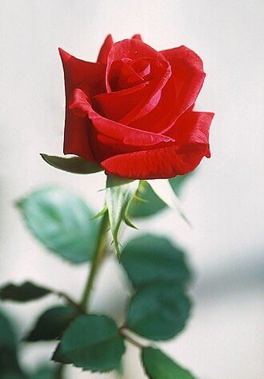

Tulipas
As tulipas representam elegância e graça. São muito populares na primavera.

Descubra a beleza e o significado das flores
As rosas são símbolos de amor e paixão. Existem em várias cores, cada uma com um significado diferente.

As tulipas representam elegância e graça. São muito populares na primavera.
Os girassóis simbolizam felicidade e energia positiva, sempre voltados para o sol.